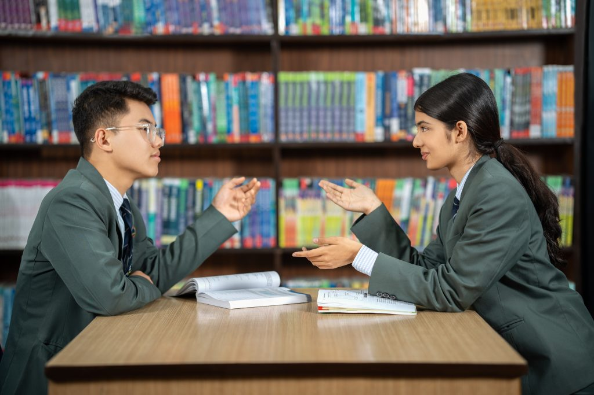
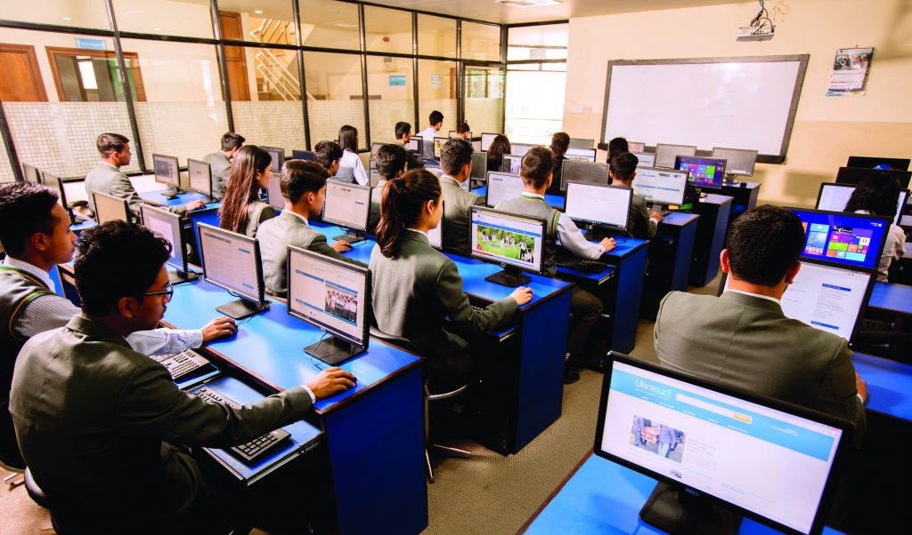
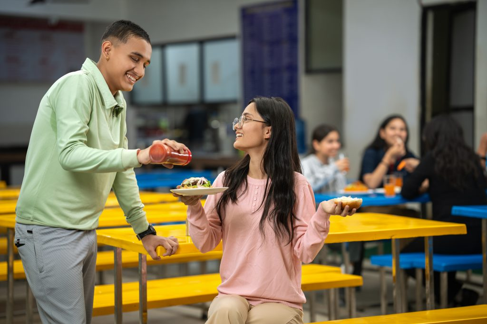
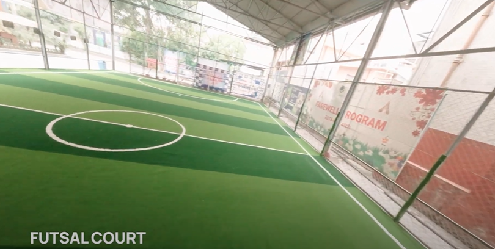

Your Gateway to a Successful Future
Uniglobe Secondary School in Kathmandu, Nepal offers comprehensive +2 programs in Science, Management, and Law. Each stream is designed to nurture students with essential academic, practical, and analytical skills to excel in their chosen career paths.
The +2 Science program builds a strong foundation in Physics, Chemistry, Biology, and Mathematics. With modern labs and experienced instructors, students develop critical thinking and research skills, preparing for medical, engineering, or technical careers.
The +2 Management program trains future business leaders with practical knowledge in accounting, business studies, and economics. Students engage in real-world case studies, simulations, and interactive classes to sharpen decision-making and teamwork abilities.
The +2 Law program introduces students to jurisprudence, legal theories, constitutional law, and criminal justice. Through mock trials, debates, and legal drafting, it nurtures the next generation of ethical and articulate legal professionals.
Our teachers are experienced professionals who bring real-world knowledge to the classroom, fostering a supportive and intellectually stimulating environment.
The college operates in a cost-effective but highly congenial environment. With green study parks, sports grounds, AC interiors, and peaceful self-study zones, Uniglobe offers a perfect academic setting.
A spacious, modern hall with 300+ seats, fully equipped for events like stage programs, presentations, talk shows, and exhibitions, with multimedia and AC.
Updated with books, journals, e-library access, multimedia materials, and guided by librarians throughout the day.
Fully branded LED computers with unlimited internet access, enabling students to explore cloud technology and digital learning tools.
Offers hygienic and nutritious food with a variety of local and continental menus at reasonable prices, ensuring well-being of students and staff.
Indoor and outdoor games like basketball, cricket, futsal, table tennis, and more, promoting fitness and fun through competitions and recreational activities.
Multiple buses and micro-buses cover all areas within Kathmandu Ring Road for safe and convenient student commuting.
Modern classrooms with AC, multimedia, internet, fire alarm, and appealing interior design built for high learning outcomes.
+2 in Science, Management, and Law.
Minimum SEE GPA of 1.6 and D+ in English, Nepali, and Mathematics for Management & Law streams.
Modern learning environment, skilled faculty, and focus on practical knowledge with global perspective.
Follow the four-step admission process: Counselling → Form → Exam → Enrollment.
📍 Kamaladi, Ganeshthan, Kathmandu, Nepal
📞 01-5321875, 01-5320722, 01-5351409
📧 info@uniglobecollege.edu.np
📱 Uniglobe College (Kamaladi): 9851311179